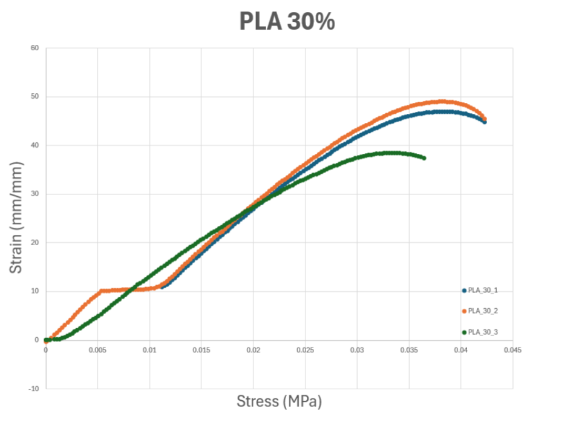
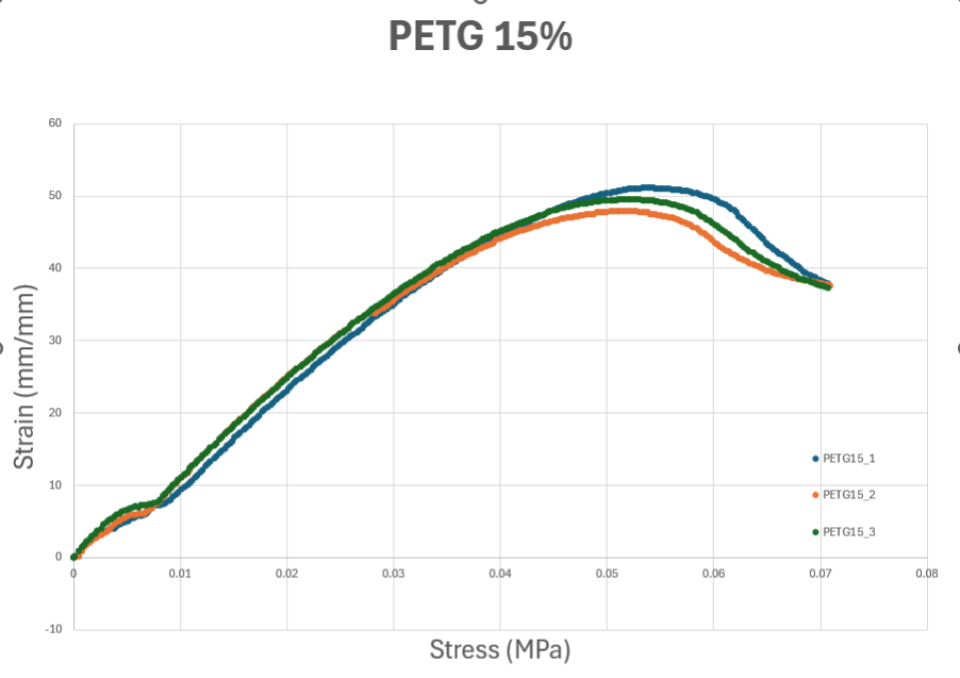

The first thing we noticed from our tensile test was that the young modules was higher on the PLA than the PETG. This means that the PLA is more stiffer than the PETG and can wistand less bend and warping than PETG is capable off.


above are the graphs for the PLA 30, which had the highest youngs modules, compared to the 15% PETG which had the smallest